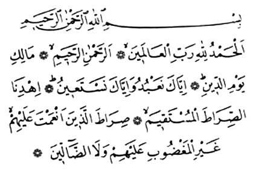
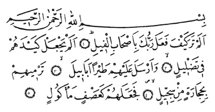
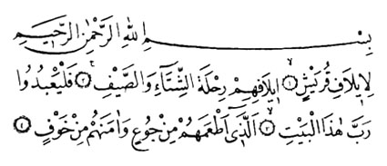
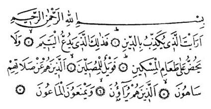
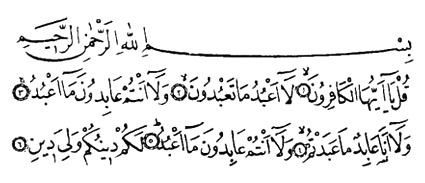
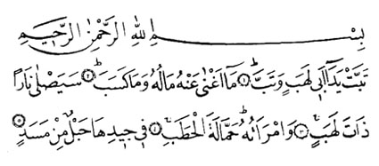

NAMAZDA OKUNAN BAZI SÛRELER (*)
Fatiha Sûresi |
|
 |
|
Okunuþu: Elhamdü lillâhi rabbil'alemin. Errahmânir'rahim. Mâliki yevmiddin. Ýyyâke na'budü ve iyyâke neste'în, Ýhdinessýrâtel müstakîm. Sýrâtellezine en'amte aleyhim ðayrilmaðdûbi aleyhim ve leddâllîn. |
|
Anlamý: Hamd, âlemlerin Rabbi, merhametli olan, merhamet eden ve Din Günü'nün sahibi olan Allah'a mahsustur. (Allahým!) Ancak sana kulluk eder ve yalnýz senden yardým dileriz. Bizi doðru yola, nimete erdirdiðin kimselerin, gazaba uðramayanlarýn, sapmayanlarýn yoluna eriþtir. |
Fil Sûresi |
 |
| Okunuþu: Elem tera keyfe fe'ale rabbüke biashâbilfîl. Elem yec'al keydehüm fî tadlîl. Ve ersele aleyhim tayran ebâbîl. Termîhim bihicâratin min siccîl. Fece'alehüm ke'asfin me'kûl. |
| Anlamý: (Ey Muhammed! Kâbe'yi yýkmaya gelen) Fil sahiblerine Rabbinin ne ettiðini görmedin mi? Onlarýn düzenlerini boþa çýkarmadý mý? Onlarýn üzerine, sert taþlar atan sürülerle kuþlar gönderdi. Sonunda onlarý, yenilmiþ ekin gibi yaptý. |
Kurayþ Sûresi |
 |
| Okunuþu: Li'î lâfi Kurayþ'in. Îlâfihim rihleteþþitâi vessayf. Felya'büdû rabbe hâzelbeyt. Ellezî et'amehüm min cû'in ve âmenehüm min havf. |
| Anlamý: Kureyþ kabilesinin yaz ve kýþ yolculuklarýnda uzlaþmasý ve anlaþmasý saðlanmýþtýr. Öyleyse kendilerini açken doyuran ve korku içindeyken güven veren bu Kâbe'nin Rabbine kulluk etsinler. |
Mâun Sûresi |
 |
| Okunuþu: Era'eytellezî yükezzibü biddîn. Fezâlikellezî, yedu'ulyetîm. Ve lâ yehüddü alâ ta'âmilmiskîn. Feveylün lilmüsallîn. Ellezîne hüm an salâtihim sâhûn. Ellezîne hüm yürâûne. Ve yemne'ûnelmâ'ûn. |
|
Anlamý: (Ey Muhammed!) Dini yalan sayaný gördün mü? Öksüzü kakýþtýran, yoksulu doyurmaya yanaþmayan kimse iþte odur. Vay o namaz kýlanlarýn haline ki: Onlar kýldýklarý namazdan gâfildirler. Onlar gösteriþ yaparlar. Onlar basit þeyleri (ödünç) dahi vermezler. |
Kevser Sûresi |
|
Okunuþu: Ýnnâ a'taynâkelkevser. Fesalli lirabbike venhar. Ýnne þânieke hüvel'ebter. |
|
Anlamý: (Ey Muhammed!) Doðrusu sana pek çok nimet vermiþizdir. Öyleyse Rabbin için namaz kýl, kurban kes. Doðrusu adý, saný ortadan kalkacak olan, sana kin tutan kimsedir. |
Kâfirûn Sûresi |
|
 |
| Okunuþu: Kul yâ eyyühel kâfirûn. Lâ a'büdü mâ ta'büdûn. Ve lâ entüm âbidûne mâ a'büd. Ve lâ ene âbidün mâ abedtüm. Ve lâ entüm âbidûne mâ a'büd. Leküm dînüküm veliye dîn. |
| Anlamý: (Ey Muhammed!) De ki: Ey inkârcýlar! Ben sizin taptýklarýnýza tapmam. Benim taptýðýma da sizler tapmazsýnýz. Ben de sizin taptýðýnýza tapacak deðilim. Benim taptýðýma da sizler tapmýyorsunuz. Sizin dininiz size, benim dinim banadýr. |
|
Nasr Sûresi |
| Okunuþu: Ýzâ câe nasrullahi velfeth. Ve raeytennâse yedhulûne fî dinillâhi efvâcâ. Fesebbih bihamdi rabbike vestaðfirh. Ýnnehû kâne tevvâbâ. |
| Anlamý: (Ey Muhammed!) Allah'ýn yardýmý ve zafer günü gelip, insanlarýn Allah'ýn dinine akýn akýn girdiklerini görünce, Rabbini överek tesbih et; O'ndan baðýþlama dile, çünkü O, tevbeleri daima kabul edendir. |
| Tebbet Sûresi |
 |
| Okunuþu: Tebbet yedâ ebî lehebin ve tebb. Mâ eðnâ anhü mâlühû ve mâ keseb. Seyeslâ nâren zâte leheb. Vemraetühû hammâletelhatab. Fî cî dihâ hablün min mesed. |
| Anlamý: Ebû Leheb'in elleri kurusun; kurudu da! Malý ve kazandýðý kendisine fayda vermedi. Alevli ateþe yaslanacaktýr. Karýsý da, boynunda bir ip olduðu halde ona odun taþýyacaktýr. |
| Ýhlas Sûresi |
| Okunuþu: Kul hüvellâhü ehad. Allâhüssamed. Lem yelid ve lem yûled. Ve lem yekün lehû küfüven ehad. |
| Anlamý: (Ey Muhammed!) De ki: O Allah bir tektir. Allah her þeyden müstaðni ve her þey O'na muhtaçtýr. O doðurmamýþ ve doðmamýþtýr. Hiç bir þey O'na denk deðildir. |
| Felak Sûresi |
| Okunuþu: Kul e'ûzü birabbilfelak. Min þerri mâ halak. Ve min þerri ðasikýn izâ vekab. Ve min þerrinneffâsâti fil'ukad. Ve min þerri hâsidin izâ hased. |
| Anlamý : (Ey Muhammed!) De ki: Yaratýklarýn þerrinden, bastýrdýðý zaman karanlýðýn þerrinden, düðümlere nefes eden büyücülerin þerrinden, hased ettiði zaman hasedçinin þerrinden, tan yerini aðartan Rabbe sýðýnýrým. |
| Nâs Sûresi |
| Okunuþu: Kul e'ûzü birabbinnâsi. Melikinnâsi. Ýlâhinnâs. Mir þerrilvesvâsilhannâs. Ellezî yüvesvisü fî sudûrinnâsi. Minelcinneti vennâs. |
| Anlamý: (Ey Muhammed!) De ki: Ýnsanlardan ve cinlerden ve insanlarýn gönüllerine vesvese veren o sinsi vesvesecinin þerrinden, insanlarýn Tanrýsý, insanlarýn hükümraný ve insanlarýn Rabbi olan Allah'a sýðýnýrým. |
(*) Önemli Açýklama: Kur'an okumasýný bilmeyenlere ezberlemede kolaylýk olsun diye sûre ve dualarýn okunuþlarý Türk harfleri ile de yazýlmýþtýr. Ancak, Kur'an harflerindeki bazý harflerin Türk alfabesindeki karþýlýklarý olmadýðýndan sûre ve dualarýn yeni harflerle doðru olarak öðrenilmesi mümkün deðildir. Bu sebeple sûre ve dualarý, iyi bilen bir öðreticinin aðzýndan dinleyerek yanlýþsýz öðrenmek gerekir. Namazýn farzlarýndan biri de Kur'an okumaktýr. Manasý bozulacak þekilde Kur'an'ýn yanlýþ okunmasý halinde namazýn bozulacaðý düþünülürse, namaz surelerini doðru ezberlemenin önemi daha iyi anlaþýlýr.